本文只讲前向推理（Forward / Inference），不涉及反向传播与训练。
在学习大模型推理过程中，最小的模型文件也有2个多GB的小，内部保存的词汇表token数量最小也有3200多条，每个token对应一个4096的向量，构成模型的token向量表，称为嵌入表(Embedding vector table),模型内部有包含32层运算，每层保存4096X4096的多个参数矩阵，这些大量数据让初学者望而止步，为了满足学习去求，我们假设一个小模型设计如下（全篇用一套自洽的玩具模型贯穿）：
超参 取值 说明 vocab12 词表大小：token 集合 = {0,1,2,3,4,5,6,7,8,9, +, =}（10 个数字 + 加号 + 等号，正好 12 个） hidden32 每个 token 的向量维度（d_model） layers3 Transformer block 堆叠层数 base10000 RoPE 频率底数 √d√32 ≈ 5.657 注意力缩放因子 示例输入："1+2+3"，token 序列 =
[1, +, 2, +, 3]→ id 序列[1, 10, 2, 10, 3]，序列长度N = 5。
训练完成的模型文件（checkpoint）本质是一堆可学习参数张量的集合。它不只是「每层几个矩阵」，还包含全局共享的表。
| 类别 | 张量 | 形状（玩具） | 是否每层独立 | 作用 |
|---|---|---|---|---|
| 嵌入表 | E | [12, 32] | 全局一份（所有层共用） | id → 向量 的查表 |
| 注意力投影 | Wq, Wk, Wv | 各 [32, 32] | 每层独立（层间不共享） | 投影出 Query / Key / Value |
| FFN | W1, W2 | 各 [32, 32] | 每层独立 | 逐 token 非线性深加工 |
| 层归一化 | γ, β（2 处） | 各 32 向量 | 每层独立 | 缩放 + 偏移（你认识的 bias 在这里） |
| 输出投影 | lm_head | [32, 12] | 全局一份 | 最后向量 → vocab 概率 |
| 位置编码 RoPE | —— | 无参数 | —— | 仅记 base/dim 超参，不存权重 |
关键纠正点：
Wq/Wk/Wv/W1/W2是每层各存一套，Layer 1 的Wq≠ Layer 2 的Wq。嵌入表
E和lm_head是全局的，不随层数复制。
lm_head常与E共享权重（tie weights，lm_head = Eᵀ），那样可省一份[32,12]。RoPE 零参数：旋转只用
cos/sin按位置算，不进权重文件。
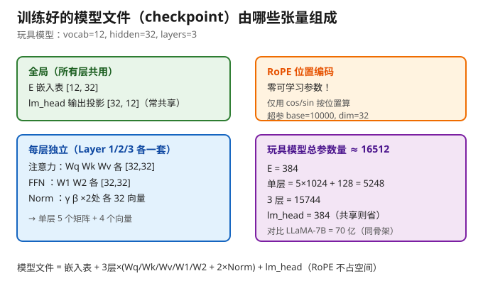
嵌入表 E[12,32] = 384
单层：5 个 32×32 矩阵 = 5×1024 = 5120；2 处 Norm 各 γ+β = 64×2 = 128 → 小计 5248
3 层 = 5248 × 3 = 15744
lm_head[32,12] = 384（若与 E 共享则省去）
总计 ≈ 16512（共享权重则 ≈ 16128）
对照：你的玩具约 1.6 万参数；LLaMA-7B 是 70 亿——差约 4 万倍，但结构骨架一模一样，只是 hidden 从 32 换成 4096、层数从 3 换成 32、vocab 从 12 换成 32000。
真实 LLaMA 用 RMSNorm（只有 γ、没有 β），且线性层通常 bias=False，偏移职责交给 Norm 的 γ/β。
真实 LLM 的 FFN 是膨胀的：[4096, 11008] → [11008, 4096]，中间约 2.7 倍；你的玩具保持 32→32→32 不膨胀，逻辑完全正确，只是「脑容量」小。
每层 = 两个并列子层（注意力 + FFN），各自带独立权重：
| 子层 | 参数 | 形状 | 数量 |
|---|---|---|---|
| 注意力投影 | Wq, Wk, Wv | [32,32] | 3 个 |
| 注意力 Norm | γ_attn, β_attn | 32 | 2 个向量 |
| FFN | W1, W2 | [32,32] | 2 个 |
| FFN Norm | γ_ffn, β_ffn | 32 | 2 个向量 |
| 单层小计 | 5 个 [32,32] 矩阵 + 4 个 32 向量 |
x全局（1 份）:E [12, 32] ← 嵌入表lm_head [32, 12] ← 输出投影（可与 E 共享）Layer 1（独立）: Wq, Wk, Wv, W1, W2 (各 [32,32]) + Norm×2 (各 γ,β)Layer 2（独立）: Wq, Wk, Wv, W1, W2 (各 [32,32]) + Norm×2 (各 γ,β)Layer 3（独立）: Wq, Wk, Wv, W1, W2 (各 [32,32]) + Norm×2 (各 γ,β)
所以注意力矩阵共有
3 层 × 3 = 9个独立的[32,32]（Wq/Wk/Wv 各 9 个）；FFN 矩阵共3×2 = 6个。
都是「可学习参数」，存于 checkpoint：推理时直接加载，不再变化。
权重跨 token 位置共享，但不跨层共享：同一层里 5 个 token 共用同一份 Wq；不同层各有各的。
实现上常合并：框架常把 Wq/Wk/Wv 拼成 [32, 96] 一次算完再切分，但数学等价于 3 个独立 [32,32]，按 3 个理解最清楚。
整体数据流（形状全程跟踪）：
xxxxxxxxxx"1+2+3"→ 分词 → id [1,10,2,10,3] (N=5)→ 嵌入查表 → x [5, 32]→ 3× Transformer Block → 每层输出仍是 [5, 32]→ 取最后位置 → [1, 32]→ lm_head → [1, 12] → softmax → 采样 → 下一个 token→ 自回归循环，直到生成 '='、'6'、结束符
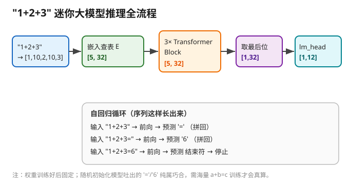
xxxxxxxxxx"1+2+3" → ["1", "+", "2", "+", "3"]→ id 序列 [1, 10, 2, 10, 3] # vocab 顺序: 0..9 → id 0..9; '+' → 10; '=' → 11
这 5 个 id 就是后续所有矩阵运算的索引。
[5, 32]模型文件里存着嵌入表 E[12, 32]（12 行 = 12 个 token，32 列 = 隐藏维）。这一步是 gather（按 id 取行），不是矩阵乘：
xxxxxxxxxxh[0] = E[1] ∈ R^32 ← token "1"h[1] = E[10] ∈ R^32 ← token "+"h[2] = E[2] ∈ R^32 ← token "2"h[3] = E[10] ∈ R^32 ← token "+"（与 h[1] 同取第 10 行，初始向量相同）h[4] = E[3] ∈ R^32 ← token "3"
拼起来 = 残差流 x，形状 [5, 32]。此时 5 个 token 各自孤立，彼此不知道对方存在。
注意：
x本身是[5,32]，位置信息尚未进入——它会在每层的注意力里由 RoPE 注入。
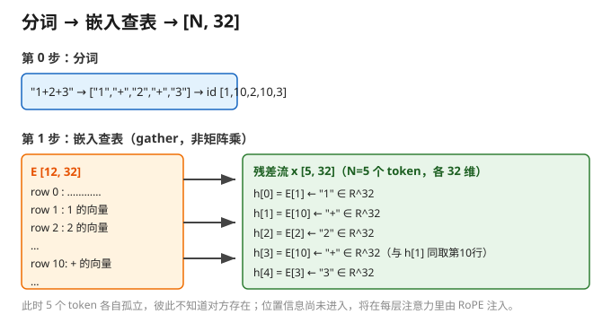
每层内部结构完全一致（只是换各自权重）。下面以 Layer 1 详细拆解。
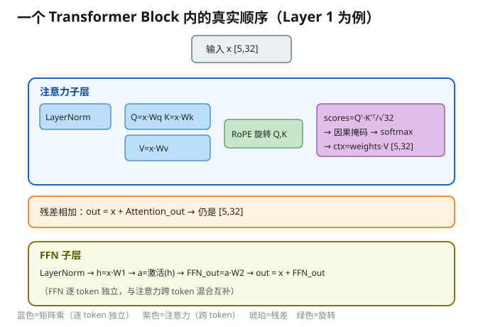
对 x 逐位置归一化（减均值、除标准差，再 γ 缩放 + β 偏移），形状仍是 [5, 32]。此步不是矩阵乘，且无跨 token 交互。
32×32 矩阵乘在这里）xxxxxxxxxxQ = x · Wq → [5,32] × [32,32] = [5,32] # Wq 跨 5 个位置共享K = x · Wk → [5,32]V = x · Wv → [5,32]
逐 token 独立并行：token 0 的结果绝不流入 token 1。
Wq 是 [32,32] 的含义：左 32 = x 的列数，右 32 = 输出维度；所以 Q/K/V 出来还是 [5,32]，才能做残差相加。
这里 x 是 [5,32] 矩阵（5 行 = 5 个 token，32 列 = 特征）。
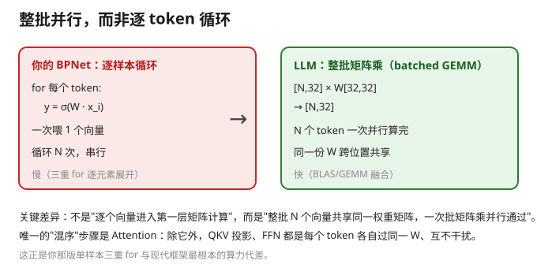
把每个 token 的 32 维向量按下标两两配对成 16 对 (0,1)(2,3)…(30,31)，每对当成一个 2D 坐标绕原点旋转：
预计算频率角（只算一次，与位置无关）：θ_i = base^(−2i/32) = 10000^(−i/16)，i = 0..15：
| i | θ_i | i | θ_i |
|---|---|---|---|
| 0 | 1.000000 | 8 | 0.010000 |
| 1 | 0.562341 | 9 | 0.005623 |
| 2 | 0.316228 | 10 | 0.003162 |
| 3 | 0.177828 | 11 | 0.001778 |
| 4 | 0.100000 | 12 | 0.001000 |
| 5 | 0.056234 | 13 | 0.000562 |
| 6 | 0.031623 | 14 | 0.000316 |
| 7 | 0.017783 | 15 | 0.000178 |
这是一条等比数列，公比 10000^(−1/16) ≈ 0.562341。低序号对转得快（高频，捕捉局部），高序号对转得慢（低频，捕捉全局）。
每个位置 m 的旋转角：φ_{m,i} = m · θ_i（m = 0..4）。m=0 全 0（不转）；m=4 转得最多。
逐对旋转（以位置 m 的第 i 对 (q_{2i}, q_{2i+1}) 为例）：
xxxxxxxxxxq'_{2i} = q_{2i}·cos φ − q_{2i+1}·sin φq'_{2i+1} = q_{2i}·sin φ + q_{2i+1}·cos φ
16 对做完 → 旋转后的 q'（仍 32 维）。对 m=0..4 全做一遍 → Q'[5,32]。
K 同理（同位置、同 θ，用相同旋转）→ K'[5,32]。
V 不旋转，保持原 V[5,32]。
只作用于 Q、K，不作用于 V 和残差流 x；且每层都重新旋一次（因为每层的 Q/K 是新向量）。
总旋转次数 = 32（层）× 5（token），但对象永远是 Q、K。
关键性质：旋转是正交矩阵
R(m)，有R(m)ᵀ·R(n) = R(n−m)，于是Q'[m]·K'[n] = Q·R(n−m)·K——点积只含相对距离n−m，位置信息干净地渗进注意力。
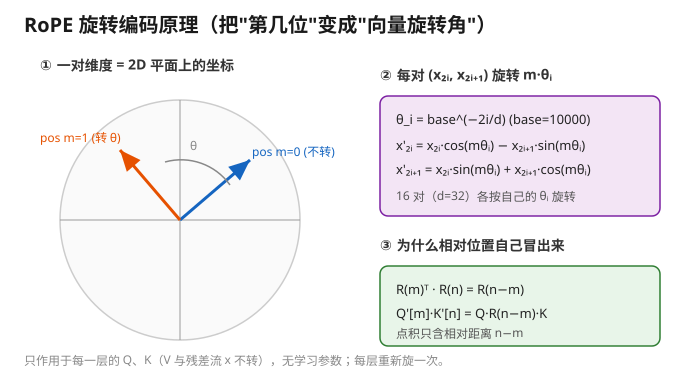
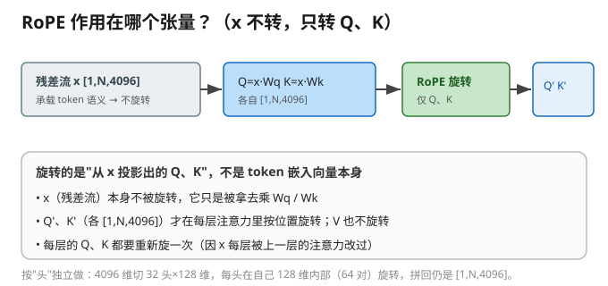
① 分数矩阵 scores = Q' · K'ᵀ / √32 → [5,5]
xxxxxxxxxx维度: Q'[5,32] × K'ᵀ[32,5] = [5,5] （中间维 32 对齐相消）元素: scores[i][j] = ( Σ_{k=0}^{31} Q'[i][k]·K'[j][k] ) / √32
i = Query 位置（谁在问），j = Key 位置（问谁），k = 特征维度（0..31 逐对相乘再求和 = 点积）。
为什么 ÷√32：32 维点积方差随 √d 增长，除以 √d≈5.657 把数值拉回 ~1，防止 softmax 极端化、梯度消失。这就是标准的 scaled dot-product attention。
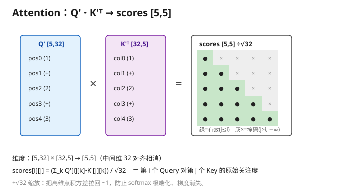
② 因果掩码（causal mask）
语言模型从左到右生成，第 i 个 token 不能看未来：当 j > i 时 scores[i][j] = −∞，softmax 后权重 = 0。
pos0('1') 只看自己 → 第 0 行仅 (0,0) 有效；
pos4('3') 看 0..4 全部 → 第 4 行全有效，汇聚所有前文（呼应你最早问的「前面影响第 N-1 个」）。
③ softmax 按行归一 → weights[5,5]
xxxxxxxxxxweights[i][j] = exp(scores[i][j]) / Σ_{k≤i} exp(scores[i][k])
每行和为 1，weights[i][j] = 第 i 个 token 对第 j 个 token 的关注概率。
示例（示意）pos4 那行：
xxxxxxxxxxscores[4] ≈ [-0.2, 0.5, 1.8, 0.3, 2.5]weights[4] ≈ [0.04, 0.08, 0.32, 0.06, 0.50] ← 最关注自己(0.50)和 '2'(0.32)
④ 聚合内容 ctx = weights · V → [5,32]
xxxxxxxxxxctx[i] = Σ_{j=0}^{i} weights[i][j] · V[j] ← 第 i 行 = 按权重聚合前面所有 V
V[0..4] 各 32 维，加权求和后 ctx[4] 仍是 32 维，但已「揉进 1+2+ 的全部信息」。
[5,5]分数矩阵本身不进下一层——它只是「路由表」，决定每个 token 该从别处抄多少内容；真正流下去的是ctx。
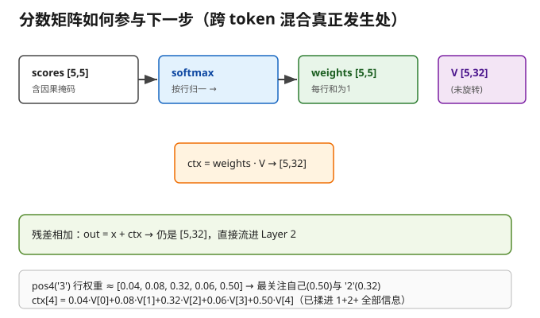
out[5,32]xxxxxxxxxxout = x + ctx ← x 是进入本层时的残差流
形状仍是 [5,32]（残差流等宽）。
xxxxxxxxxx① LayerNorm（独立一套 γ,β）② h = x · W1 → [5,32] # 逐 token 独立矩阵乘③ a = 激活(h) → [5,32] # 现代用 GELU/SiLU（非线性，关键！）④ FFN_out = a · W2 → [5,32] # 逐 token 独立矩阵乘⑤ out = x + FFN_out → [5,32] # 残差相加
FFN 是逐 token 独立的：每个 token 各过一遍，token 之间不交互——和注意力子层（跨 token）正好互补。
那步激活引入的非线性正是模型能拟合复杂模式的来源（没有它，多层退化为一层）。
真实 LLM 的 FFN 是膨胀的 4096→11008→4096；你的玩具 32→32→32 不膨胀，逻辑正确。
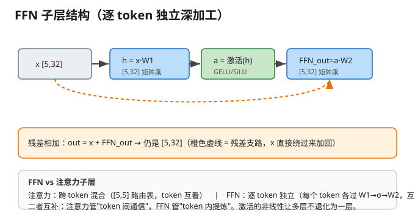
Layer 1 输出 [5,32] → 流进 Layer 2（同结构、独立权重）→ Layer 3。三层下来，每个位置的向量都被「向前看」3 次，pos4 的向量已凝聚 1+2+ 的全部上下文。
只取最后位置（推理时）：h_last = x[4] → [1, 32]。
训练时是所有位置同时预测各自的下一个；推理时退化成「每次只产出一个 token」。
lm_head 投影：[1,32] × W_out[32,12]ᵀ → [1, 12]（logits）。W_out 常 = 嵌入表 E 的转置（权重绑定）。
softmax → 概率分布 [1, 12]。
采样 → 一个 token id。贪心取最大 / 温度采样 / top-p。
对 "1+2+3"，模型预测下一个是 '='（id 11）。
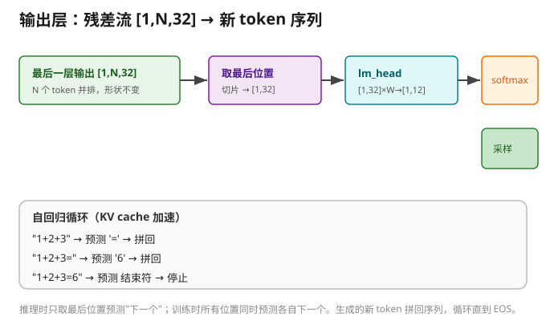
xxxxxxxxxx输入 "1+2+3" → 前向 → 预测 '=' （拼回）输入 "1+2+3=" → 前向 → 预测 '6' （拼回）输入 "1+2+3=6" → 前向 → 预测 结束符 → 停止
模型不是一步算出 6，而是一个字一个字吐。生成新 token 时：
KV cache：第一次全量前向已缓存每个位置的 K、V，之后每生成一个新 token 只算它自己的位置，从缓存取前面的 → 越生成越省。
张量阶数在输出层降下来：[1,N,32] → 切片 [1,32] → lm_head [1,12] → 采样坍缩成一个标量 id → 重新拼回 [1,N+1,32]（闭环）。
⚠️ 重要前提：上面走的是「计算图 / 数据怎么流动」，不是「模型真会算 1+2+3=6」。权重
E/Wq/Wk/Wv/FFN/lm_head都是训练出来的；随机初始化的模型吐出的 '=' 和 '6' 纯属巧合。要让它真会算，得用海量a+b=c式子训练。但这套结构（嵌入查表 + 3 层 32×32 + 注意力 + lm_head）和真实小模型的推理骨架完全一致。
| 主题 | 结论 |
|---|---|
| 模型 = 一个 Tensor？ | ❌ 是计算图，图里有成百上千个张量（权重 + 激活） |
| 每层 = 一个矩阵？ | ⚠️ 层的权重通常是 2 阶矩阵；层本身 = 计算 + 参数张量 |
| 每层的节点数一致吗？ | 层间接口宽度恒定（残差流锁死），层内峰值宽度临时膨胀再收回 |
| 向量×矩阵对吗？ | ✅ 线性层核心就是 W·x + b；大模型按整条序列做批量 GEMM |
| 阶数由谁决定？ | 由数据形状决定：权重多 2 阶（LLM 的 W[hidden,hidden]），激活因 batch/seq 升 3 阶 [N,seq,hidden]，卷积核/注意力分 4 阶 |
| RoPE 作用在？ | 每层的 Q、K（不是 V、不是 x）；逐对旋转，无学习参数；每层重旋 |
| 跨 token 影响在哪？ | 只在 Attention（不是矩阵乘）；矩阵乘逐 token 独立并行 |
| 注意力公式 | scores = Q'·K'ᵀ / √d → 因果掩码 → softmax → weights → ctx = weights·V |
| FFN 特点 | 逐 token 独立、非线性激活、与注意力互补 |
| 输出 | 取最后位置 [1,hidden] → lm_head → softmax → 采样 → 自回归 |
| 维度 | 你的玩具 | LLaMA-7B |
|---|---|---|
| vocab | 12 | 32000（LLaMA-3 为 128000） |
| hidden | 32 | 4096 |
| 层数 | 3 | 32 |
| 每层矩阵 | 5 个 [32,32] | 5 类 [4096,4096]（QKV + 2×FFN），FFN 中间 11008 |
| 注意力头 | 不分头（直接 16 对旋转） | 32 头，每头 128 维，RoPE 在头内旋转 |
| 激活 | GELU/SiLU | SiLU（SwiGLU FFN） |
| 参数量 | ≈ 1.6 万 | 70 亿 |
| 结构骨架 | 完全一致 | 完全一致 |
一句话总结：你今天建立的「分词 → 嵌入查表
[N,hidden]→ 每层（LayerNorm → QKV 投影 → RoPE → Attention → 残差 → FFN → 残差）→ 取最后位置 → lm_head → softmax → 采样 → 自回归」心智模型，已经抓住了现代大模型 90% 的推理机制。剩下 10% 是训练如何得到这些权重、以及 MoE / 长上下文等工程增强。
附：本文所有矩阵维度均按玩具模型 vocab=12, hidden=32, layers=3 推演；若要改为 31 维，把所有 32 换成 31、√32 换成 √31 即可，逻辑不变。
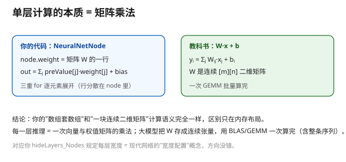
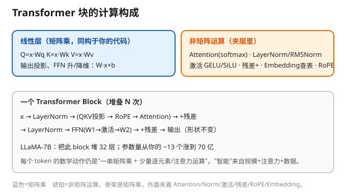
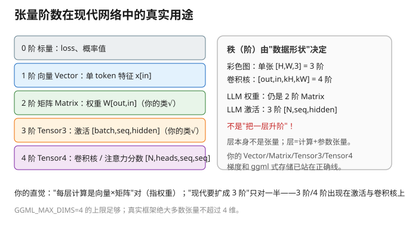
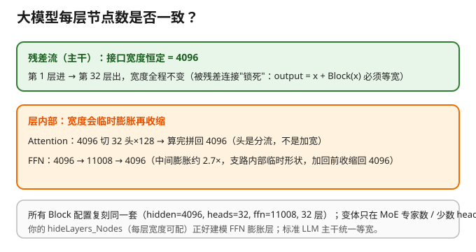
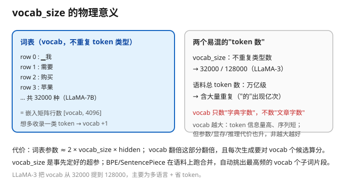
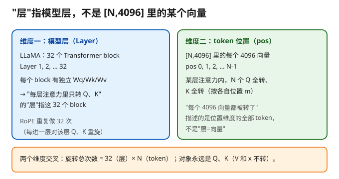
下图用 平面张量块完整描绘一次前向推理的全部数据流（玩具模型 1+2+3，vocab=12 / hidden=32 / 3 层）：
彩色块 = 数据张量（激活值），灰色块 = 权重矩阵 W，橙色块 = 输入/输出 token；块内网格线表示张量的矩阵维度；
主干自上而下：分词 → 嵌入查表 → 3 层 Block（每层含注意力子层 + FFN 子层）→ 取最后位置 → lm_head → softmax → 采样 → 自回归回环。
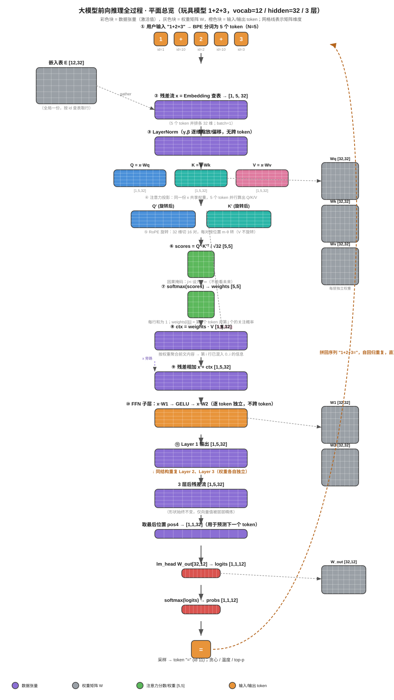
提示：在 VS Code / Typora / Obsidian 等本地预览器中可直接显示；GitHub 网页端对部分内联 SVG 会做净化，若需网页查看可联系导出 PNG 版。